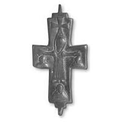

Catalog › CE-0471 · SYR2012-48
Valvă de encolpion (față), cat. 48, NMIU Kiev
sfârșitul sec. X – începutul sec. XI (967–1033) · loc necunoscut · Muzeul Național de Istorie a Ucrainei (НМИУ), Kiev; colecția „siriană” B. I. și V. N. Hanenko, inv. в 4626/259 (4752)
single valve of a reliquary cross, altul; sfârșitul c. X – începutul sec. XI (967–1033); find spot unknown; kept at Muzeul Național de Istorie a Ucrainei (НМИУ), Kiev; colecția „siriană” B. I. și V. N. Hanenko.


Identificare
- Categorie
- Valvă izolată
- Material
- Altul
- Tehnică
- Turnare în relief
- Dimensiuni
- Î 68 × L 44 × Gr 7 mm
Iconografie
- Avers
- Răstignirea (Hristos în colobium)
- Descriere avers
- În centru, Răstignirea cu preaslăvitori (?), redați frontal pe capetele laterale, ca și un sfânt necunoscut pe capătul de jos. Hristos în colobium lung; capul, ușor înclinat spre umărul stâng, are nimb în care crucea nu este marcată; brațe drepte, tălpile în lături. Lemnul crucii este marcat doar printr-o cruce cu brațe egale deasupra capului (capătul crucii?). Colobiul este decorat pe laturi cu o bordură ornamentală din hașuri oblice, care trece și pe mâneci și creează iluzia mai multor legături de frânghie la brațe. Imaginile sfinților în bust nu și-au păstrat trăsăturile iconografice. Toate imaginile sunt în relief: capul lui Hristos și figurile sfinților în relief înalt, colobiul și crucea de la capăt în relief jos.
Datare și atribuire
- Datare
- sfârșitul sec. X – începutul sec. XI (967–1033)
- Centru
- Balcani
- Tipologie
- Răstignirea cu preaslăvitori; valva anterioară cu iconografie netradițională
Descoperire
- Context
- Colecție (fără context)
- Coordonate
- 50.4536° N, 30.5164° E
- Precizia locului
- Loc de păstrare (loc de descoperire incert)
Păstrare și referințe
- Colecție
- Muzeul Național de Istorie a Ucrainei (НМИУ), Kiev; colecția „siriană” B. I. și V. N. Hanenko
- Nr. inventar
- в 4626/259 (4752)
- Bibliografie
- A. A. Пескова, Л. В. Строкова, Христианские древности Византии в «Сирийской коллекции» Б. И. и В. Н. Ханенко, Sankt-Petersburg–Kiev, 2012, 225 p. [Peskova, Strokova 2012], p. 135, cat. nr. 48, ilustrația (fotografie și desen) de la p. 135. Publicată și în: A. A. Peskova, 2007, p. 276, fig. 7: 1.
- Figura
- ilustrația la cat. nr. 48
- Planșe
- Peskova, Strokova 2012, p. 135
- Observații
- Valva anterioară a unei cruci-relicvar cu brațe drepte evazate, cu urechi pe bază lată; lăcaș adânc, cu rebord vertical și cu „negativ” (amprenta reliefului valvei anterioare) clar; pierdere de metal pe rebordul brațului orizontal; rebordul capătului de jos deformat; patinată, cu oxizi pe revers, exteriorul foarte șters (desenul șters se vede mai clar pe „negativul” de pe interior). Autoarele citează valve asemănătoare la Vatican și la Odârți (Bulgaria). Imaginea fotografică din carte arată fața exterioară și fața interioară; la fișă s-a luat doar fața exterioară. Dimensiuni în sursă (în paranteză, înălțimea cu urechile): 6,8 (7,5; 8,9)×4,35 cm; grosime 0,5–0,7 cm. Vechiul număr de inventar al Muzeului de Artă Hanenko (1925) este cel din paranteză. Album Hanenko, vol. III (needitat): tabla XXXIX, nr. 386. Atribuirea autoarelor: regiunea balcano-dunăreană, sfârșitul sec. X – începutul sec. XI. Locul descoperirii nu este dat în sursă. Material în sursă: aliaj de cupru. Locul descoperirii nu e cunoscut cu precizie; punctul de pe hartă marchează locul de păstrare (Muzeul Național de Istorie a Ucrainei), nu locul descoperirii. Coordonate: nu sunt date în sursă.
Citare: Corpus Encolpiorum, CE-0471, Valvă de encolpion (față), cat. 48, NMIU Kiev, --root/piese/SYR2012-48/ (accesat 2026-10-20).